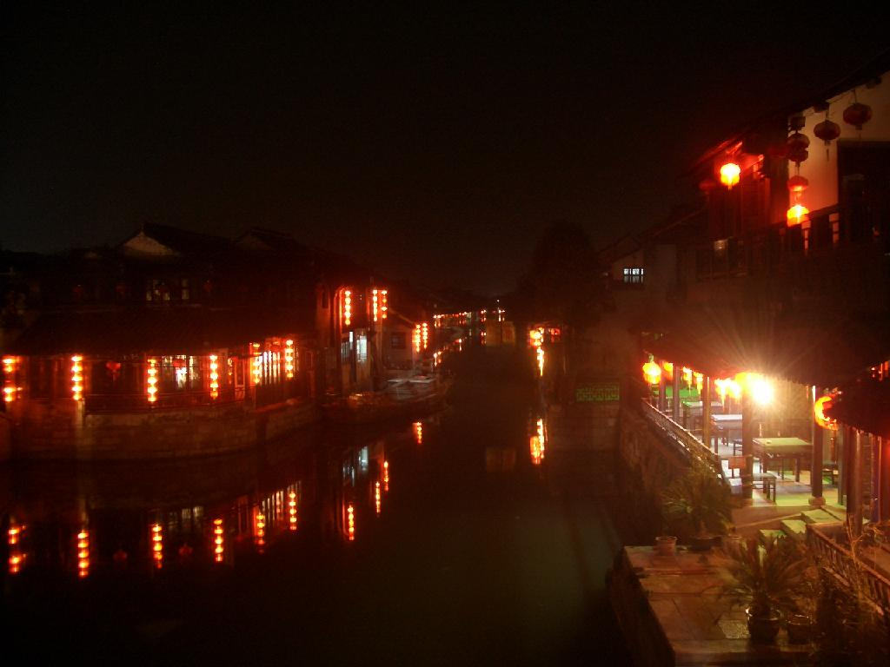
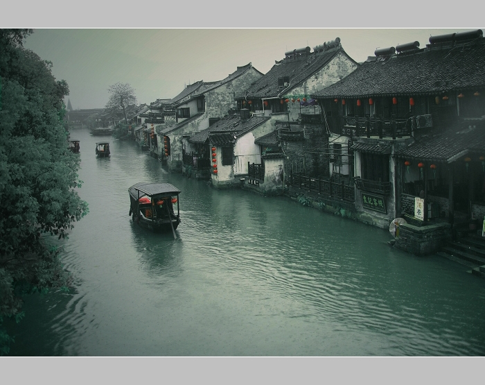

江南古镇 ─ 西塘

古朴幽静的水乡古镇─西塘：
西塘镇是嘉善县北部重镇，在华东地区享有较高的知名度。境内地势平坦，河流纵 横，自然环境十分幽静。它兼有水乡古镇周庄的小桥流水、古街 石巷，又有其独特的乡情古韵。如果把周庄比作“小家碧玉”， 那么，西塘就好象是“纯朴的村姑”，在喧嚣繁杂、快节奏的现 代社会里，保留着一份古朴幽静的历史文化氛围。
西塘镇早在元、明时代就沿河建屋，依水成市，居民 们都是临水而居，至今仍有许多保存完好的明清建筑。西 塘镇最大的特点是“桥多、巷多、廊棚多”，此外，全镇的“河、港、荡、湖、浜”等合计有137处， 当地人称为 “出门半里就用船，河港荡漾水茫茫”。
西塘镇历史悠久，名人辈出。镇上人历代中进士的有 19名，中举人有31名， 现代获高级职称的各界人士有近 200名。
西塘人世世代代喜爱琴棋书画、养鸟种花。而且，西 塘镇民风淳朴，西塘人热情好客，无论你走进哪条小弄或 是哪家小院，都会感受到千年文化古镇那独特的文化气息。
古镇游：
[种福堂]
“种福堂”是西塘镇上目前保存较为完好的古民居之一，它是宋朝王渊的子 孙们的宅院。现在的“种福堂”建于清朝康熙年间。这幢宅院共有七进，沿河临街进门， 第一进是“轿厅”；第二进是“正厅”；第三进是“种福堂”，厅堂中央悬挂着由海宁陈 邦彦题写的“种福堂”匾额。厅堂后面是厨房，东西各有两条“俾弄”，连通整个宅院。 “种福堂”正对面的砖雕门楼是保存完好的古门楼，具有重要的观赏价值和学术研究价 值，艺术风格简洁明快。门楼上雕刻有“梅兰竹菊”４种图案，正中刻有“维和集福”４个 字，既显示出大户人家的气派与主人的信仰，又使整个小院呈现祥和的气氛。
[七老爷庙]
七老爷庙位于西塘镇雁塔湾边，始建于明 代，是百姓为纪念金姓运粮官而建的。西塘人每年都要举 行“七老爷出巡”庙会，以纪念这位为老百姓而牺牲自己 的护国随粮王。农历四月初三，各路店家、各地信徒11时 由塔湾出发，浩浩荡荡通过42个社棚，一直到第二天中午 回到庙里。庙会期间举行巡游、迎会、唱戏等纪念活动。
[西园]
西园在西塘镇西街和计家弄里，建于明代万历年间，是一个姓朱的大户人家 的私家花园，后出让给孙氏。民国初年，孙家的亲戚曾经在花园里开茶室。因为东面的 假山上有一株几丈高的白皮松，风一起，就发出哗哗松涛声，所以茶室就叫“听涛轩”。 当时来游园喝茶的大多是文人墨客。
民国九年(1920)年，柳亚子先生来西塘，与陈巢南、余十眉、蔡韶声等诗友在园内吟 诗合影，他们雅兴大发，仿照北宋著名书法家朱芾、诗人黄庭坚的“西园雅集园”，将他们照片题名为“西园雅集第二图”。
西园现已整理开发：园182平方米，宅80平方米。 园 内树木、花草、假山、亭池错落有致，具有江南花园的内 秀之气。西园的美是一种有文化气息的静美。在这里游玩， 就像欣赏一首清幽抒情的小夜曲。

[圣堂]
圣堂旧称庞公祠，是明朝巡按庞尚鹏的祠堂，初建于明朝万历三年(1575)， 邑人姚绶有记。清康熙五十年（1711），重修殿廊，改名静觉庵，但镇人仍称为“圣 堂”。圣堂每逢岁首，商贩多集于此，各色风味小吃、年画玩具琳琅满目。居民扶老携幼，到圣堂祈福、吃点心或为孩童买玩具，熙熙攘攘十分热闹。
[宅弄]
西塘镇有许多建于明清年代的古老旧居，这些旧宅具有典型的江南民居特点。 深宅大院内有宅弄；院宅之间又有露天弄堂，这些小弄夹在两院高墙之间，幽深窄小，颇 有风韵。据统计，全镇有长短不一的弄堂共122条，其中百米以上的宅弄有5条，一般宽为2米以下，弄的路 面铺设条石或砖块。计家弄长158米，宽1米； 叶家弄长159米，宽1.1米；苏家弄长122米，宽1.2米。这些幽深窄 长的小弄为西塘增添了古朴与神秘。
最有特色的一条露天小弄叫“石皮弄”，是形成于明代嘉靖年间，是镇上王姓家族 子孙宅院之间的一条小弄，弄长68米，最窄处只有0.8米宽，是一条“独行弄”。“ 石皮弄”由168块薄薄的石板铺成路面，因石板“薄如皮”而得名，象这样保存完好的古弄已经十分稀少了。
[廊棚]
廊棚，其实就是带屋顶的街，是西塘颇有特色的景点之一，有“游西塘，不能不看廊棚”之说。西塘镇 的小街小路多数都有廊棚覆盖，使赶集买卖、行人过往免 受日晒雨淋之苦。西塘的廊棚有的濒河、有的居中、有的 沿河一侧还设有靠背长凳，供人歇息。廊棚的顶有“一落 水”，有“二落水”，也有过街楼。西塘镇这样的廊棚总 长有877米，现在保养完好的是塔湾街和朝南埭等沿河廊棚。
朋友们，现在，您只要坐上嘉善旅行社的旅游班车，不到30分钟，便可领略古镇西塘 浓郁的水乡风情和幽静的小街小巷，感受到水乡古镇特有的悠闲与宁静！嘉善旅行社将为您提供地陪导游服务。